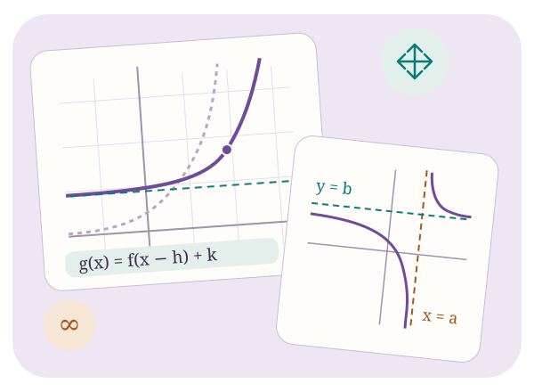

Traslados de funciones
Explora desplazamientos horizontales y verticales, especialmente en funciones exponenciales y logarítmicas.
Entrar a la actividad 01 →Alejandrina / Laboratorio de funciones
Las gráficas cuentan una historia.
Aprende a moverlas y a leer sus límites.

Tu recorrido
Explora desplazamientos horizontales y verticales, especialmente en funciones exponenciales y logarítmicas.
Entrar a la actividad 01 →Tres casos para saber a qué altura se acerca una función racional cuando x se aleja mucho.
Entrar a la actividad 02 →El denominador siempre será cuadrático. Aprende a distinguir dos raíces, una raíz doble, ninguna raíz real y los huecos.
Entrar a la actividad 03 →Combina las dos estrategias con numeradores lineales, cuadráticos o cúbicos y denominadores cuadráticos.
Entrar a la actividad 04 →